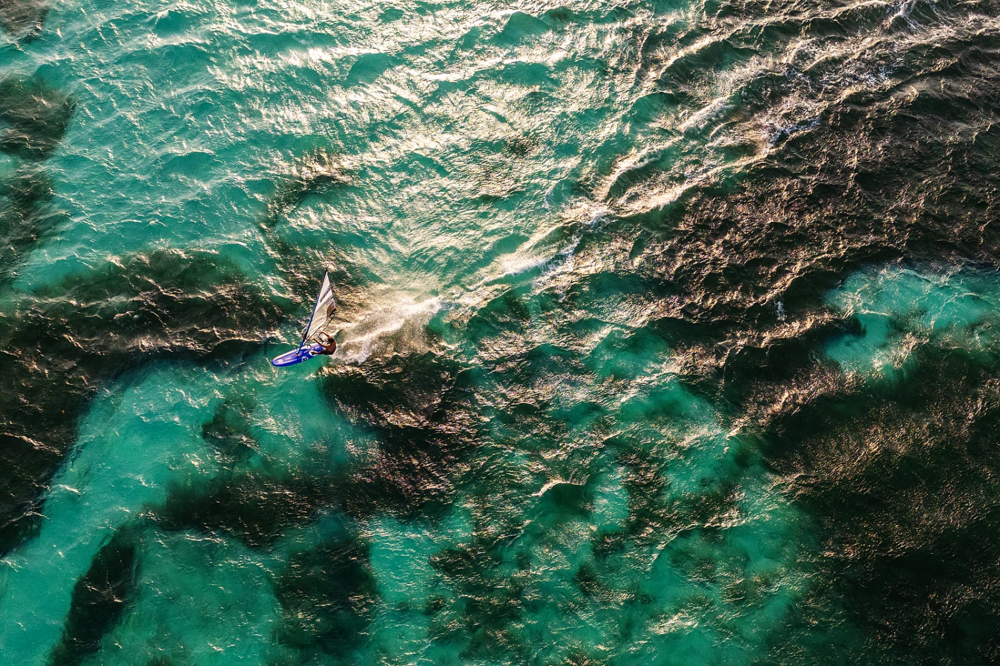
Beyond the result
Portfolio.
Gear, race days and the moments around them — from Lac Bay to the world.
The journey
From Lac Bay
to the world stage.
Roots
Lac Bay, Bonaire
Grows up on the water at Frans Paradise, in the training group of PWA pro Taty Frans. Sail number NB-2011.
Start a conversationDrag, click or use ← → to travel through the years

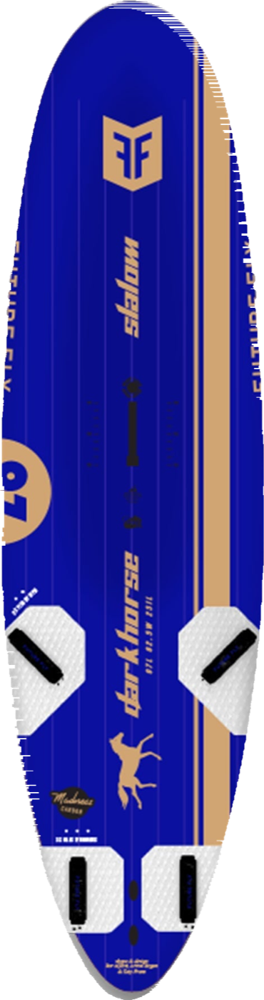
His race kit
Built by the best.
Made for winning.
Working with the best brands means full send — every start, every gybe, every finish line.
 North Sails Prisma FinRace sail · 6.0, 6.7 & 7.7 m²
North Sails Prisma FinRace sail · 6.0, 6.7 & 7.7 m² Future Fly Dark Horse SLSlalom board · 97 & 117 L
Future Fly Dark Horse SLSlalom board · 97 & 117 L
Gallery
On and off the water.
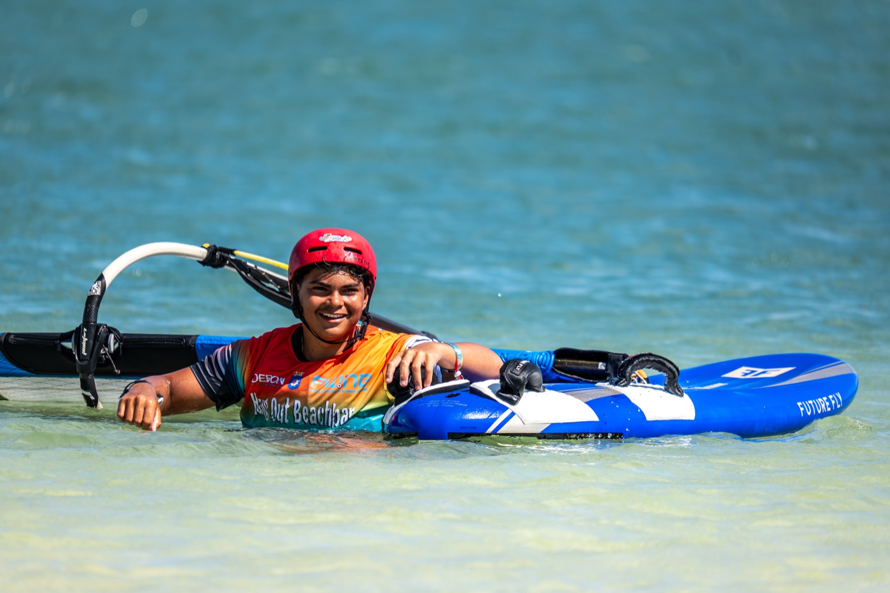


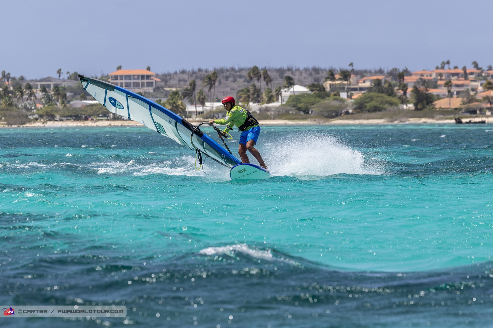


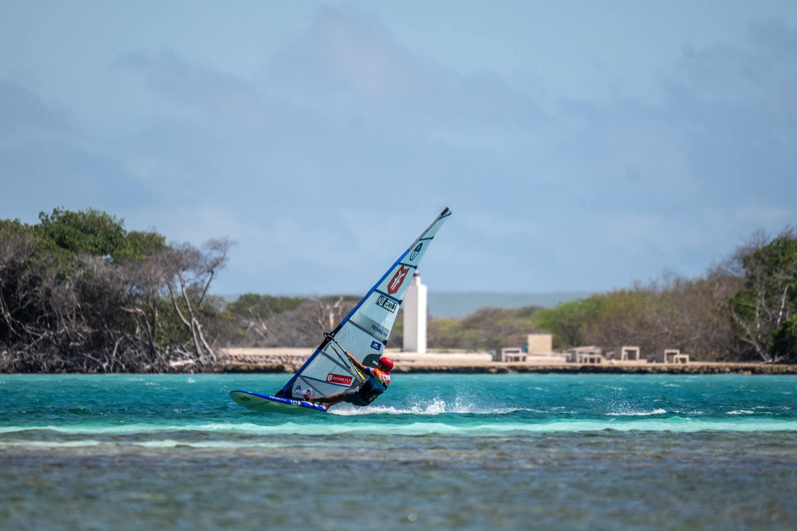
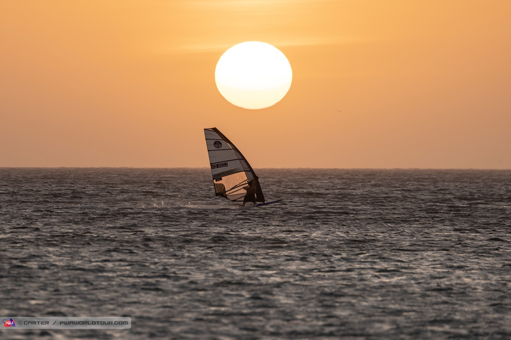

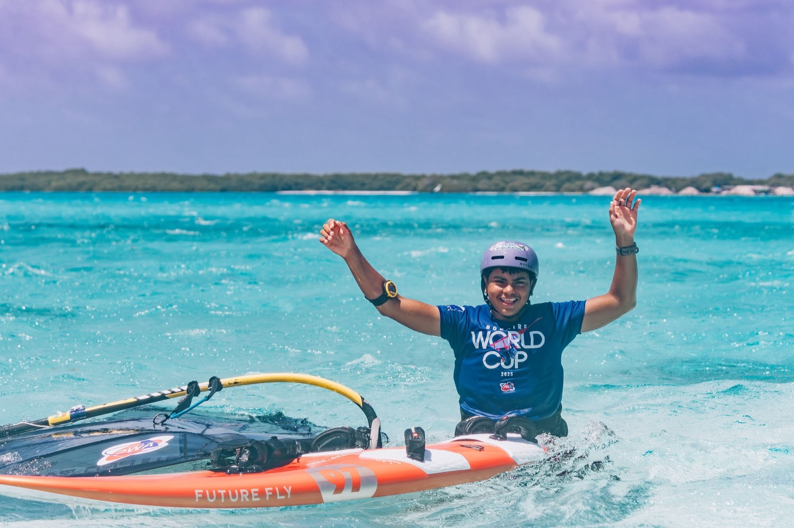
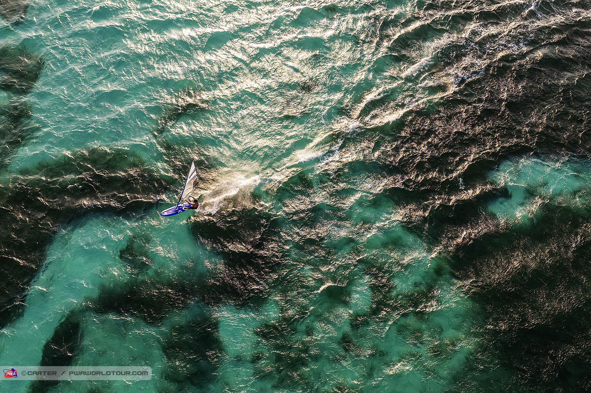

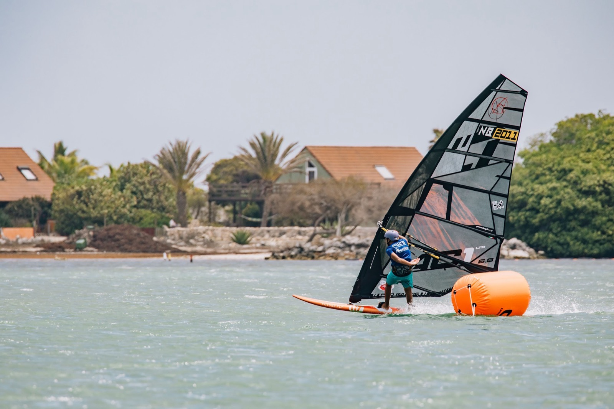
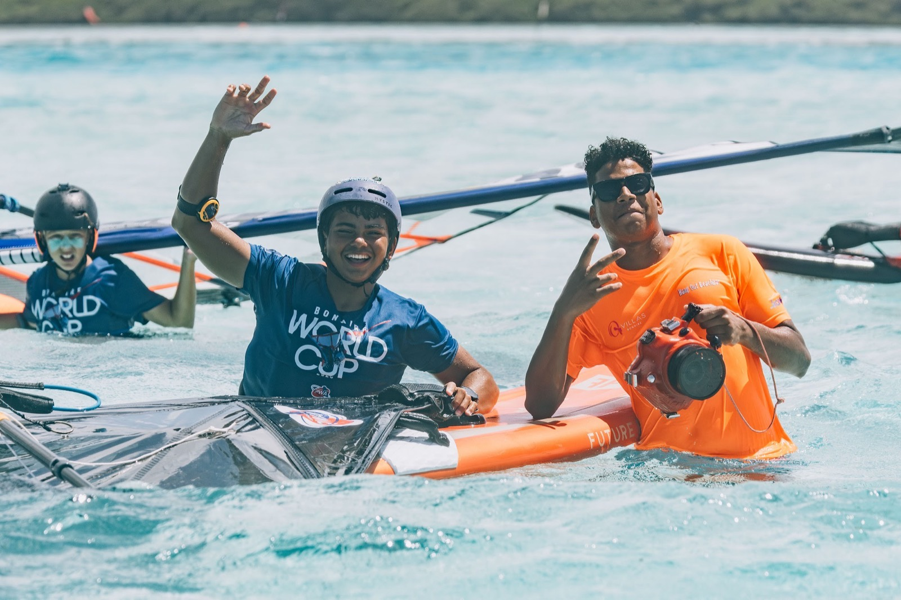
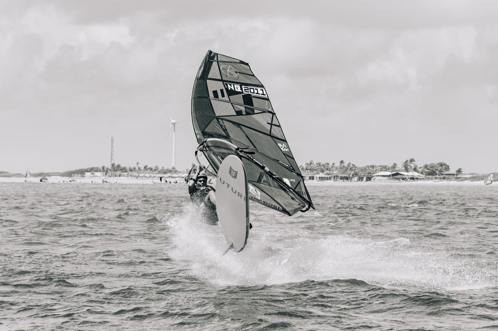
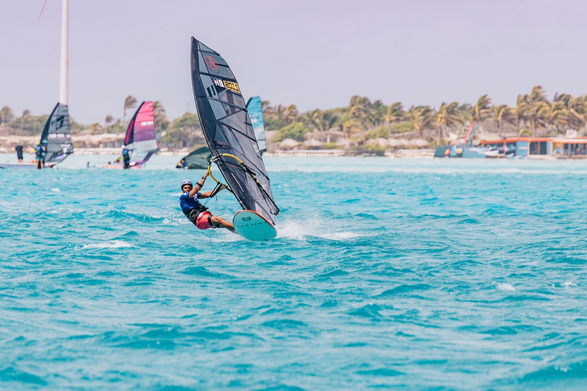